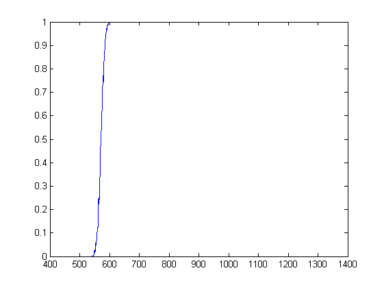

Min1=dlmread('probslice_nexper_1x1_Binary_Logistic_abs_xcentral570_ycentral1300_numpoints30_nexper_400.txt'); Min1(:,1)=int32(Min1(:,1)); Min1(:,2)=int32(Min1(:,2)); ycoord = Min1(1,2,1); xsup = max(Min1(:,1)); xinf = min(Min1(:,1)); xmin =400; for j=xsup+1:xmax fila = [j,ycoord,1.0]; Min1 = vertcat(Min1,fila); end for j=xmin:xinf-1 fila = [j,ycoord,0.0]; Min1 = vertcat(fila,Min1); end plot(Min1(:,1),Min1(:,3),'-'); hold on;